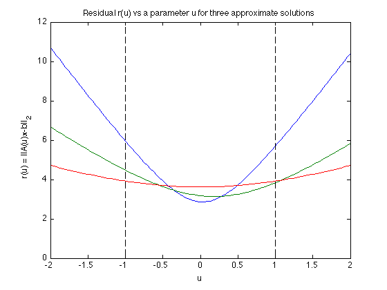

Figure 6.15: A comparison of stochastic and worst-case robust approximation
randn('seed',0);
m=20; n=10;
A = randn(m,n);
[U,S,V] = svd(A);
S = diag(logspace(-1,1,n));
A = U(:,1:n)*S*V';
B = randn(m,n);
B = B/norm(B);
b = randn(m,1);
fprintf(1,'Computing the optimal solution for: \n');
fprintf(1,'1) the nominal problem ... ');
cvx_begin quiet
variable x_nom(n)
minimize ( norm(A*x_nom - b) )
cvx_end
fprintf(1,'Done! \n');
fprintf(1,'2) the stochastic robust approximation problem ... ');
P = (1/3)*B'*B;
cvx_begin quiet
variable x_stoch(n)
minimize ( square_pos(norm(A*x_stoch - b)) + quad_form(x_stoch,P) )
cvx_end
fprintf(1,'Done! \n');
fprintf(1,'3) the worst-case robust approximation problem ... ');
cvx_begin quiet
variable x_wc(n)
minimize ( max( norm((A-B)*x_wc - b), norm((A+B)*x_wc - b) ) )
cvx_end
fprintf(1,'Done! \n');
novals = 100;
parvals = linspace(-2,2,novals);
errvals_ls = [];
errvals_stoch = [];
errvals_wc = [];
for k=1:novals
errvals_ls = [errvals_ls, norm((A+parvals(k)*B)*x_nom - b)];
errvals_stoch = [errvals_stoch, norm((A+parvals(k)*B)*x_stoch - b)];
errvals_wc = [errvals_wc, norm((A+parvals(k)*B)*x_wc - b)];
end;
plot(parvals, errvals_ls, '-', parvals, errvals_stoch, '-', ...
parvals, errvals_wc, '-', [-1;-1], [0; 12], 'k--', ...
[1;1], [0; 12], 'k--');
xlabel('u');
ylabel('r(u) = ||A(u)x-b||_2');
title('Residual r(u) vs a parameter u for three approximate solutions');
Computing the optimal solution for:
1) the nominal problem ... Done!
2) the stochastic robust approximation problem ... Done!
3) the worst-case robust approximation problem ... Done!
